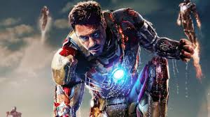
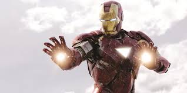
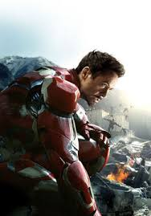
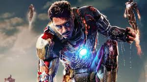
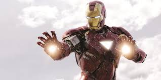
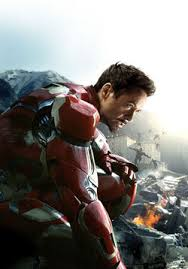

Anthony Edward "Tony" Stark (May 29, 1970-October 17, 2023), also known as Iron Man,
is the titular main protagonist of the Iron Man trilogy, one of the titular main protagonists
of the Avengers tetralogy, a cameo character in The Incredible Hulk, a major character in both
Captain America: Civil War and Spider-Man: Homecoming, and a posthumous character in Spider-Man:
Far from Home.
He is a genius, billionaire, former playboy, and philanthropist who not only invented the Iron Man
Armor but wore the suit himself. He is also the co-leader and one of the founding members of the Avengers,
and the CEO of Stark Industries, which once sold highly sophisticated weapons systems technologies to the
government defense organizations such as S.H.I.E.L.D., who uses them to maintain peace and order, but has
pulled his company away from weapons business. Iron Man also shares a friendly rivalry and close friendship
with Captain America and has become a mentor and a father figure to Spider-Man.
Tony was portrayed by Robert Downey, Jr., who also played Alex Finch in Chances Are, Sherlock Holmes in the Guy
Ritchie films, and Dr. John Dolittle in the titular 2020 film. He was voiced by the late Keiji Fujiwara in the
Japanese Dub.
| Full name | Anthony Edward Stark. |
| Origin: | Marvel Cinematic Universe. |
| Type of hero: | Armored Superhero. |
| Occupation: | CEO of SStark Industries.
M.I.T Student Consulatant and Affiliate of S.H.I.E.L.D. Founder and head of Damage Control. Founding member and Benefactor of the Avengers. |
| Alias: | Tony Stark.
Iron Man. Wonder Boy. The Mysterious Bodyguard. The New Kid. The Consultant. The Starkster. The Da Vinci of Our Time. The Merchant of Death. Robotic Wunderkind. The Mechani. |
| Skills: | Genius-Level Intelligence.
Charisma. Indomitable Will. Master Businessman. Master Scientist. Genius-Engineer. Tactic Mastery. Skilled Investigator. Skilled Hand-To-Hand Fighter. Expert Martial Artist. Expert Marksman. Master Hacker. Expert Pilot. Multilingualism. Vast Wealth and Resources. With Armor: Superhuman Strength. Superhuman Durability. Superhuman Speed. Superhuman Reflexes. Superhuman Agility. Energy Projection. Flight. High-Tech Computers. Informations Analysis. Armor Modification. With Infinity Gauntlet: Nigh-Omnipotence. Death Inducement. |